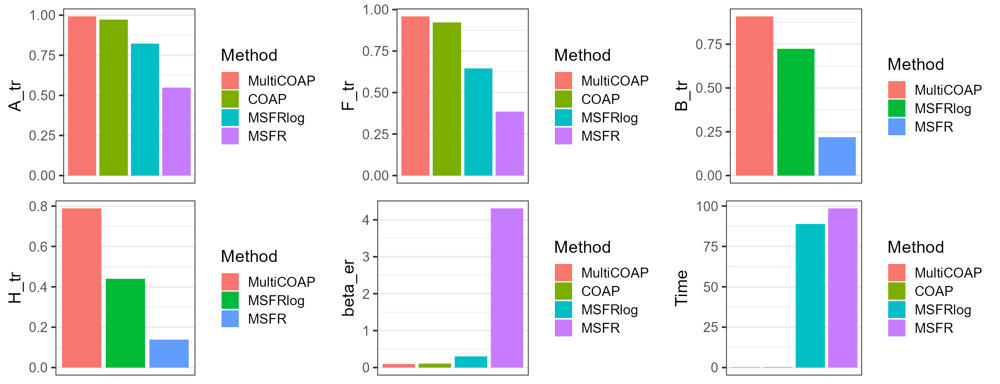

This vignette introduces the usage of MultiCOAP for the analysis of high-dimensional count data with additional high-dimensional covariates, by comparison with other methods.
The package can be loaded with the command, and define some metric functions:
library(MultiCOAP)
#> Loading required package: irlba
#> Loading required package: Matrix
library(GFM)
#> Loading required package: doSNOW
#> Loading required package: foreach
#> Loading required package: iterators
#> Loading required package: snow
#> Loading required package: parallel
#>
#> Attaching package: 'parallel'
#> The following objects are masked from 'package:snow':
#>
#> closeNode, clusterApply, clusterApplyLB, clusterCall, clusterEvalQ,
#> clusterExport, clusterMap, clusterSplit, makeCluster, parApply,
#> parCapply, parLapply, parRapply, parSapply, recvData, recvOneData,
#> sendData, splitIndices, stopCluster
#> GFM : Generalized factor model is implemented for ultra-high dimensional data with mixed-type variables.
#> Two algorithms, variational EM and alternate maximization, are designed to implement the generalized factor model,
#> respectively. The factor matrix and loading matrix together with the number of factors can be well estimated.
#> This model can be employed in social and behavioral sciences, economy and finance, and genomics,
#> to extract interpretable nonlinear factors. More details can be referred to
#> Wei Liu, Huazhen Lin, Shurong Zheng and Jin Liu. (2021) <doi:10.1080/01621459.2021.1999818>. Check out our Package website (https://feiyoung.github.io/GFM/docs/index.html) for a more complete description of the methods and analyses
normvec <- function(x) sqrt(sum(x^2)/ length(x))
trace_statistic_fun <- function(H, H0){
tr_fun <- function(x) sum(diag(x))
mat1 <- t(H0) %*% H %*% qr.solve(t(H) %*% H) %*% t(H) %*% H0
tr_fun(mat1) / tr_fun(t(H0) %*% H0)
}
trace_list_fun <- function(Hlist, H0list){
trvec <- rep(NA, length(Hlist))
for(i in seq_along(trvec)){
trvec[i] <- trace_statistic_fun(Hlist[[i]], H0list[[i]])
}
return(mean(trvec))
}First, we generate the data simulated data.
p <- 100; nvec <- c(200,300); d <- 10
methodNames <- c("MultiCOAP", "COAP", "MSFRlog", "MSFR")
metricMat <- matrix(NA, nrow=length(methodNames), ncol=6)
colnames(metricMat) <- c('A_tr', 'B_tr', 'beta_er', 'F_tr', 'H_tr', 'Time')
row.names(metricMat) <- methodNames
q <- 3; qs <- c(2,2); rank0 <- 2
rho<-c(2,3.5,0.1)
datList <- gendata_simu_multi2(seed = 1,nvec=nvec, p=p, d= d,
q=q, qs=qs, rank0=rank0,rho=rho,sigma2_eps=1)
Fit the MultiCOAP model using the function MultiCOAP()
in the R package MultiCOAP. Users can use
?MultiCOAP to see the details about this function. For two
matrices
and
,
we use trace statistic to measure their similarity. The trace statistic
ranges from 0 to 1, with higher values indicating better performance. To
gauge the estimation accuracy of
,
we employ the mean estimation error (Er).
XcList <- datList$Xlist;
ZList <- datList$Zlist;
res <- MultiCOAP(XcList, ZList, q=q, qs=qs,rank_use = rank0,init="MSFRVI")
#> iter = 2, ELBO= 2184343.536246, dELBO=1.001017
#> iter = 3, ELBO= 2192364.416467, dELBO=0.003672
#> iter = 4, ELBO= 2197355.147549, dELBO=0.002276
#> iter = 5, ELBO= 2196995.097790, dELBO=0.000164
#> iter = 6, ELBO= 2199809.993634, dELBO=0.001281
#> iter = 7, ELBO= 2201424.459731, dELBO=0.000734
#> iter = 8, ELBO= 2201999.929877, dELBO=0.000261
#> iter = 9, ELBO= 2202353.689072, dELBO=0.000161
#> iter = 10, ELBO= 2202610.919528, dELBO=0.000117
#> iter = 11, ELBO= 2202803.337119, dELBO=0.000087
#> iter = 12, ELBO= 2202946.216802, dELBO=0.000065
#> iter = 13, ELBO= 2203052.965942, dELBO=0.000048
#> iter = 14, ELBO= 2203135.021646, dELBO=0.000037
#> iter = 15, ELBO= 2203200.534665, dELBO=0.000030
#> iter = 16, ELBO= 2203254.477119, dELBO=0.000024
#> iter = 17, ELBO= 2203299.618271, dELBO=0.000020
#> iter = 18, ELBO= 2203337.582750, dELBO=0.000017
#> iter = 19, ELBO= 2203369.536121, dELBO=0.000015
#> iter = 20, ELBO= 2203396.463035, dELBO=0.000012
#> iter = 21, ELBO= 2203419.225522, dELBO=0.000010
#> iter = 22, ELBO= 2203438.560787, dELBO=0.000009
#str(res)
metricMat["MultiCOAP",'Time'] <- res$time.use
metricMat["MultiCOAP",'A_tr'] <- trace_statistic_fun(res$A, datList$A0)
metricMat["MultiCOAP",'B_tr'] <- trace_list_fun(res$B, datList$Blist0)
metricMat["MultiCOAP",'F_tr'] <- trace_list_fun(res$F, datList$Flist)
metricMat["MultiCOAP",'H_tr'] <- trace_list_fun(res$H, datList$Hlist)
metricMat["MultiCOAP",'beta_er'] <- normvec(datList$bbeta0-res$bbeta)We compare MultiCOAP with various prominent methods in the
literature. They are (1) covariate-augmented Possion factor model (COAP)
that disregards the study-specified factors and only estimates the
loadings and factors shared across studies, implemented in the R package
COAP; (2) newly developed multi-study factor regression
model (MSFR) with/without log(1+x) normalization for the observed count
data.
(1). First, we implemented covariate-augmented Possion factor model (COAP) and record the metrics that measure the estimation accuracy and computational cost.
mat2list <-function(z_int, nvec){
zList_int <- list()
istart <- 1
for(i in 1:length(nvec)){
zList_int[[i]] <- z_int[istart: sum(nvec[1:i]), ]
istart <- istart + nvec[i]
}
return(zList_int)
}
COAP_run <- function(XcList, ZList, q, rank_use, aList=NULL, ...){
require(COAP)
nvec <- sapply(XcList, nrow)
if(is.null(aList)){
aList <- lapply(nvec, function(n1) rep(1, n1))
}
Xmat <- Reduce(rbind, XcList); Zmat <- Reduce( rbind, ZList)
avec <- unlist(aList)
tic <- proc.time()
res_coap <- RR_COAP(Xmat, multiFac= avec, Z = Zmat, q=q, rank_use=rank_use, ...)
toc <- proc.time()
res_coap$Flist <- mat2list(res_coap$H, nvec)
res_coap$time.use <- toc[3] - tic[3]
return(res_coap)
}
res_coap <- COAP_run(XcList, ZList, q=q,rank_use = rank0)
#> Loading required package: COAP
#> COAP : A covariate-augmented overdispersed Poisson factor model is proposed to jointly perform a high-dimensional Poisson factor analysis and estimate a large coefficient matrix for overdispersed count data.
#> More details can be referred to Liu et al. (2024) <doi:10.1093/biomtc/ujae031>.
#> Calculate initial values...
#> iter = 2, ELBO= 2196208.907034, dELBO=1.001023
#> iter = 3, ELBO= 2200639.667769, dELBO=0.002017
#> iter = 4, ELBO= 2202502.097943, dELBO=0.000846
#> iter = 5, ELBO= 2203442.685804, dELBO=0.000427
#> iter = 6, ELBO= 2203974.249809, dELBO=0.000241
#> iter = 7, ELBO= 2204298.308810, dELBO=0.000147
#> iter = 8, ELBO= 2204506.620981, dELBO=0.000095
#> iter = 9, ELBO= 2204645.746279, dELBO=0.000063
#> iter = 10, ELBO= 2204741.378097, dELBO=0.000043
#> iter = 11, ELBO= 2204808.630051, dELBO=0.000031
#> iter = 12, ELBO= 2204856.826143, dELBO=0.000022
#> iter = 13, ELBO= 2204891.928375, dELBO=0.000016
#> iter = 14, ELBO= 2204917.856989, dELBO=0.000012
#> iter = 15, ELBO= 2204937.249320, dELBO=0.000009
metricMat["COAP",'Time'] <- res_coap$time.use
metricMat["COAP",'A_tr'] <- trace_statistic_fun(res_coap$B, datList$A0)
metricMat["COAP",'F_tr'] <- trace_list_fun(res_coap$Flist, datList$Flist)
metricMat["COAP",'beta_er'] <- normvec(datList$bbeta0-res_coap$bbeta)
(2). Then, we implemented multi-study factor regression model (MSFR) with/without log(1+x) normalization for the observed count data.
MSFR_run <- function(XcList, ZList, q, qs, maxIter=1e4, log.transform=FALSE, truncted=NULL, load.source=FALSE, dir.source=NULL){
require(MSFA)
require(psych)
if(!load.source){
source(paste0(dir.source, "MSFR_main_R_MSFR_V1.R"))
}
#fa <- psych::fa
B_s <- ZList
if(log.transform){
X_s <- lapply(XcList, function(x) log(1+x))
}else{
X_s <- XcList #
}
if(!is.null(truncted)){
replace_x <- function(x, truncted){
x[x>truncted] <- truncted
x[x<-truncted] <- -truncted
return(x)
}
X_s <- lapply(X_s, replace_x, truncted=truncted)
}
t1<- proc.time()
test <- start_msfa(X_s, B_s, 5, k=q, j_s=qs, constraint = "block_lower2", method = "adhoc")
# EM_beta <- ecm_msfa(X_s, B_s, start=test, trace = FALSE, nIt=maxIter, constraint = "block_lower1")
EM_beta <- ecm_msfa(X_s, B_s, start=test, trace = FALSE, nIt=maxIter)
t2<- proc.time()
EM_beta$Flist <- lapply(EM_beta$E_f, t)
EM_beta$Hlist <- lapply(EM_beta$E_l, t)
EM_beta$time.use <- t2[3] - t1[3]
EM_beta$lambdavec <- sapply(EM_beta$psi_s,mean)
return(EM_beta)
}
dir.source <- 'D:\\Working\\Research paper\\idea\\MultiPoisFactor\\Rpackage\\MultiCOAP\\simuCodes\\'
res_msfa <- MSFR_run(XcList, ZList, q=q, qs=qs, maxIter=1e3, log.transform=TRUE, dir.source = dir.source)
#> Loading required package: MSFA
#> Loading required package: psych
#> Loading required namespace: GPArotation
#> [1] 100
#> [1] 200
#> [1] 300
#> [1] 400
#> [1] 500
#> [1] 600
#> [1] 700
#> [1] 800
#> [1] 900
#> [1] 1000
metricMat["MSFRlog",'Time'] <- res_msfa$time.use
metricMat["MSFRlog",'A_tr'] <- trace_statistic_fun(res_msfa$Phi, datList$A0)
metricMat["MSFRlog",'B_tr'] <- trace_list_fun(res_msfa$Lambda_s, datList$Blist0)
metricMat["MSFRlog",'F_tr'] <- trace_list_fun(res_msfa$Flist, datList$Flist)
metricMat["MSFRlog",'H_tr'] <- trace_list_fun(res_msfa$Hlist, datList$Hlist)
metricMat["MSFRlog",'beta_er'] <- normvec(res_msfa$beta-datList$bbeta0)
res_msfa2 <- MSFR_run(XcList, ZList, q=q, qs=qs,truncted=500, maxIter=1e3, log.transform=FALSE, dir.source = dir.source)
#> [1] 100
#> [1] 200
#> [1] 300
#> [1] 400
#> [1] 500
#> [1] 600
#> [1] 700
#> [1] 800
#> [1] 900
#> [1] 1000
metricMat["MSFR",'Time'] <- res_msfa2$time.use
metricMat["MSFR",'A_tr'] <- trace_statistic_fun(res_msfa2$Phi, datList$A0)
metricMat["MSFR",'B_tr'] <- trace_list_fun(res_msfa2$Lambda_s, datList$Blist0)
metricMat["MSFR",'F_tr'] <- trace_list_fun(res_msfa2$Flist, datList$Flist)
metricMat["MSFR",'H_tr'] <- trace_list_fun(res_msfa2$Hlist, datList$Hlist)
metricMat["MSFR",'beta_er'] <- normvec(res_msfa2$beta-datList$bbeta0)
Next, we summarized the metrics for MultiCOAP and other compared methods in a data.frame object.
dat_metric <- data.frame(metricMat)
dat_metric$Method <- factor(row.names(dat_metric), levels=row.names(dat_metric))Plot the results for MultiCOAP and other methods, which suggests that MultiCOAP achieves better estimation accuracy for the quantiites of interest.
library(cowplot)
library(ggplot2)
#>
#> Attaching package: 'ggplot2'
#> The following objects are masked from 'package:psych':
#>
#> %+%, alpha
p1 <- ggplot(data=subset(dat_metric, !is.na(A_tr)), aes(x= Method, y=A_tr, fill=Method)) + geom_bar(stat="identity") + xlab(NULL) + scale_x_discrete(breaks=NULL) + theme_bw(base_size = 16)
p2 <- ggplot(data=subset(dat_metric, !is.na(F_tr)), aes(x= Method, y=F_tr, fill=Method)) + geom_bar(stat="identity") + xlab(NULL) + scale_x_discrete(breaks=NULL)+ theme_bw(base_size = 16)
p3 <- ggplot(data=subset(dat_metric, !is.na(B_tr)), aes(x= Method, y=B_tr, fill=Method)) + geom_bar(stat="identity") + xlab(NULL) + scale_x_discrete(breaks=NULL) + theme_bw(base_size = 16)
p4 <- ggplot(data=subset(dat_metric, !is.na(H_tr)), aes(x= Method, y=H_tr, fill=Method)) + geom_bar(stat="identity") + xlab(NULL) + scale_x_discrete(breaks=NULL)+ theme_bw(base_size = 16)
p5 <- ggplot(data=subset(dat_metric, !is.na(beta_er)), aes(x= Method, y=beta_er, fill=Method)) + geom_bar(stat="identity") + xlab(NULL) + scale_x_discrete(breaks=NULL)+ theme_bw(base_size = 16)
p6 <- ggplot(data=subset(dat_metric, !is.na(Time)), aes(x= Method, y=Time, fill=Method)) + geom_bar(stat="identity") + xlab(NULL) + scale_x_discrete(breaks=NULL)+ theme_bw(base_size = 16)
plot_grid(p1,p2,p3, p4, p5, p6, nrow=2, ncol=3)
We applied the proposed ‘CUP’ method to select the number of factors. The results showed that the CUP method has the potential to identify the true values.
selectQ <- function(res, tune.coef.rank=FALSE, threshold=c(1e-1, 1e-2, 1e-2),
method=c("var.prop", "SVR"), upper.var.prop=0.95){
method <- match.arg(method)
qlist <- list()
d_svdA <- svd(res$A)$d
#
if(method=='SVR'){
d_svdA <- d_svdA[d_svdA>threshold[1]]
qq <- length(d_svdA)
if(qq>1){
rsigs <- d_svdA[-qq]/d_svdA[-1]
qlist$q <- which.max(rsigs)
}else{
qlist$q <- 1
}
}else if(method=='var.prop'){
prop.vec <- cumsum(d_svdA^2)/sum(d_svdA^2)
qlist$q <- which(prop.vec> upper.var.prop)[1]
}
n_qs <- length(res$B)
qvec <- rep(NA, n_qs)
names(qvec) <- paste0("qs", 1:n_qs)
for(i in 1:n_qs){
# i <-1
d_svdB1 <- svd(res$B[[i]])$d
#
if(method=='SVR'){
d_svdB1 <- d_svdB1[d_svdB1>threshold[2]]
qq1 <- length(d_svdB1)
if(qq1>1){
rsigB1 <- d_svdB1[-qq1]/d_svdB1[-1]
qvec[i] <- which.max(rsigB1)
}else{
qvec[i] <- 1
}
}else if(method=='var.prop'){
prop.vec <- cumsum(d_svdB1^2)/sum(d_svdB1^2)
qvec[i] <- which(prop.vec> upper.var.prop)[1]
}
}
qlist$qs <- qvec
return(qlist)
}
XcList <- datList$Xlist;
ZList <- datList$Zlist;
res <- MultiCOAP(XcList, ZList, q=q, qs=qs,rank_use = rank0,init="MSFRVI", verbose = FALSE)
hq.list <- selectQ(res, method='var.prop')
message("hq = ", hq.list$q, " VS true q = ", q)
#> hq = 3 VS true q = 3
message("hqs.vec = ", paste(hq.list$qs, collapse =", "), " VS true qs.vec = ", paste(qs, collapse =", "))
#> hqs.vec = 2, 2 VS true qs.vec = 2, 2
sessionInfo()
#> R version 4.4.1 (2024-06-14 ucrt)
#> Platform: x86_64-w64-mingw32/x64
#> Running under: Windows 11 x64 (build 26100)
#>
#> Matrix products: default
#>
#>
#> locale:
#> [1] LC_COLLATE=Chinese (Simplified)_China.utf8
#> [2] LC_CTYPE=Chinese (Simplified)_China.utf8
#> [3] LC_MONETARY=Chinese (Simplified)_China.utf8
#> [4] LC_NUMERIC=C
#> [5] LC_TIME=Chinese (Simplified)_China.utf8
#>
#> time zone: Asia/Shanghai
#> tzcode source: internal
#>
#> attached base packages:
#> [1] parallel stats graphics grDevices utils datasets methods
#> [8] base
#>
#> other attached packages:
#> [1] ggplot2_3.5.1 cowplot_1.1.3 psych_2.4.6.26 MSFA_0.86
#> [5] COAP_1.2 GFM_1.2.1 doSNOW_1.0.20 snow_0.4-4
#> [9] iterators_1.0.14 foreach_1.5.2 MultiCOAP_1.1 irlba_2.3.5.1
#> [13] Matrix_1.7-0
#>
#> loaded via a namespace (and not attached):
#> [1] gtable_0.3.5 xfun_0.47 bslib_0.8.0
#> [4] htmlwidgets_1.6.4 lattice_0.22-6 vctrs_0.6.5
#> [7] tools_4.4.1 generics_0.1.3 stats4_4.4.1
#> [10] tibble_3.2.1 fansi_1.0.6 highr_0.11
#> [13] DEoptimR_1.1-3 pkgconfig_2.0.3 desc_1.4.3
#> [16] lifecycle_1.0.4 farver_2.1.2 compiler_4.4.1
#> [19] GPArotation_2024.3-1 textshaping_0.4.0 statmod_1.5.0
#> [22] munsell_0.5.1 mnormt_2.1.1 codetools_0.2-20
#> [25] htmltools_0.5.8.1 sass_0.4.9 yaml_2.3.10
#> [28] pracma_2.4.4 pkgdown_2.1.1 pillar_1.9.0
#> [31] jquerylib_0.1.4 rrcov_1.7-6 MASS_7.3-60.2
#> [34] cachem_1.1.0 nlme_3.1-164 robustbase_0.99-4-1
#> [37] tidyselect_1.2.1 digest_0.6.37 mvtnorm_1.3-1
#> [40] dplyr_1.1.4 labeling_0.4.3 pcaPP_2.0-5
#> [43] robust_0.7-5 fastmap_1.2.0 grid_4.4.1
#> [46] colorspace_2.1-1 cli_3.6.3 magrittr_2.0.3
#> [49] utf8_1.2.4 withr_3.0.1 matlab_1.0.4.1
#> [52] scales_1.3.0 rmarkdown_2.28 ragg_1.3.3
#> [55] evaluate_1.0.0 knitr_1.48 rlang_1.1.4
#> [58] Rcpp_1.0.13 glue_1.7.0 fit.models_0.64
#> [61] rstudioapi_0.16.0 jsonlite_1.8.9 R6_2.5.1
#> [64] systemfonts_1.1.0 fs_1.6.4